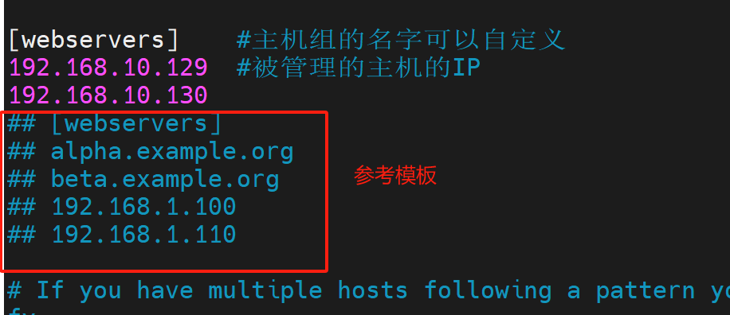
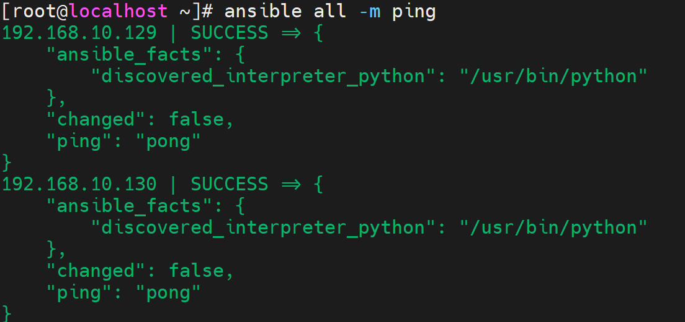
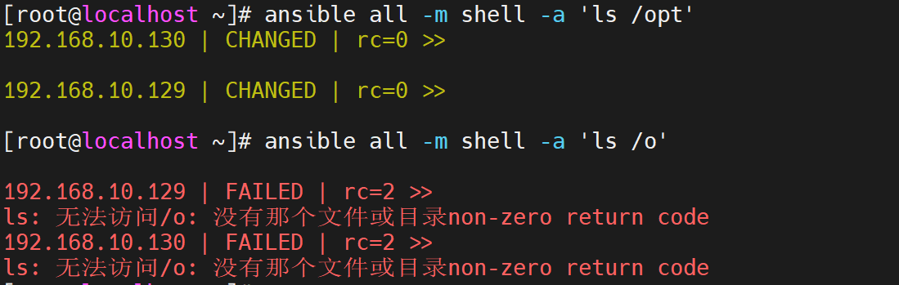
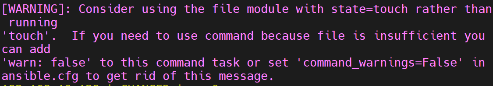

ad-hoc
Linux 自动化运维/ad-hoc.mdAnsible 自动化运维
一、ansible 入门
1.1 什么是ansible
-
Ansible是IT自动化管理工具，集成了很多模块以及功能组件，可以通过一个命令完成一系列，减少工作的复杂性
-
工作内容：主要是集中在管理、安装、部署等等
- 比如：10个Linux服务器，现在需要安装mysql服务，可以利用ansible。它是可以他是操作10台机器
Ansible和Jenkins没有可比性
Jenkins：自动化部署，它是Java开发的，需要JDK环境
主要用于部署java语言开发的项目，集成内置插件
可以连接gitee、gitlab、gitub，拉取、推送
利用maven做打包项目、发布
可以同时推送到多台设备-集群，同时部署项目
Ansible：自动化运维，它是python语言开发，需要python环境
主要用于运维工作，管理所有的互联网服务器
可以实现同时执行：命令、安装、部署等等
可以在一个文件，管理所有的设备，还可以进行针对性的处理
1.2 ansible 主要功能
-
批量执行远程命令，可以对N台主机同时运行命令
-
批量配置软件服务，可以进行自动化配置和管理服务器
-
实现软件开发，Jumserver底层就是ansible
-
编排改进IT任务，Ansible有一个:playbook，属于ansible自己的编程语言，支持自定义开发
1.3 Ansible特点
-
容易学习，无需代理
-
操作灵活，模块很多，功能强大，还可以使用playbook进行编程辅助
-
安全性高，使用ssh协议进行通信的
-
移植性很高，可以把写好Playbook拷贝到任何服务器运行
二、 部署ansible
#教学案例
1台ansible，管理互联网内的所有设备
同学们的电脑如果无法运行三个机器，那么就打开两个
----------------------------------------
192.168.10.128 Ansible主机
192.168.10.129 网络主机
192.168.10.130 网络主机
-
基础环境准备
-
开启三台虚拟机，配置IP保证可以正常连接外网
-
关闭防火墙、内核
-
[root@localhost ~]# systemctl stop firewalld
[root@localhost ~]# systemctl disable firewalld
Removed symlink /etc/systemd/system/multi-user.target.wants/firewalld.service.
Removed symlink /etc/systemd/system/dbus-org.fedoraproject.FirewallD1.service.
[root@localhost ~]# setenforce 0
[root@localhost ~]# vi /etc/selinux/config
SELINUX=disabled
- 部署Ansible主机（128）
#配置安装源
[root@localhost ~]# yum -y install epel-release
#部署Ansible
[root@localhost ~]# yum -y install ansible
三、 Ansible 配置说明
3.1 配置文件说明
[root@localhost ~]# ls /etc/ansible/
ansible.cfg hosts roles
注意： 以下文件不要随便改动，搞错了重装
| 路径 | 说明 |
|---|---|
| /etc/ansible/ansible.cfg | 主配置文件，辅助ansible的工作特性 |
| /etc/ansible/hosts | 配置主机清单的文件 |
| /etc/ansible/roles | 存放ansible角色的命令 |
3.2 ansible配置优先级
-
首先查找：$ANSIBLE_CONFIG变量，获取软件配置文件目录
-
然后查找当前目录下的:ansible.cfg
-
接着再去安装目录：ansible.cfg
-
最后查找：/etc/ansible/ansible.cfg
四、Inventory
4.1 Inventory概念
-
主要用来填写被管理的主机信息
-
默认文件：/etc/ansible/hosts
4.2 配置密钥连接
- ansible(128):配置IP地址清单
[root@localhost ~]# cp /etc/ansible/hosts{,.bak}
[root@localhost ~]# vim /etc/ansible/hosts
#20行左右，系统是通过了参考模块，可以修改模板，也可以自己编辑
[webservers] #主机组的名字可以自定义
192.168.10.129 #被管理的主机的IP
192.168.10.130

- 生产密钥
[root@localhost ~]# ssh-keygen -t rsa
`中间一直回车就可以`
- 然后把密钥推送到被控端
`在推送过程中输入一次yes，一次被控端的登录密码`
[root@localhost ~]# ssh-copy-id -i root@192.168.10.130
[root@localhost ~]# ssh-copy-id -i root@192.168.10.129
- 测试：ansible是否可以正常管理被控端
#返回的颜色时绿色的说明时成功了
[root@localhost ~]# ansible all -m ping
192.168.10.129 | SUCCESS => {
"ansible_facts": {
"discovered_interpreter_python": "/usr/bin/python"
},
"changed": false,
"ping": "pong"
}
192.168.10.130 | SUCCESS => {
"ansible_facts": {
"discovered_interpreter_python": "/usr/bin/python"
},
"changed": false,
"ping": "pong"
}

五、Ansible ad-hoc
5.1 什么是ad-hoc
- ad-hoc指的是临时指令：临时命令，执行完毕后就结束了，不会保存
| 主命令 | 主机名称 | 指定模块 | 模块 | 动作 | 命令 |
|---|---|---|---|---|---|
| ansible | all（所有主机）\主机组\IP 自定义 |
-m（固定参数） | ping | -a | df -h |
上述标黄的内容，都是可以进行修改
主机名称：可以自定义指定单个主机、主机组或者是所有被动端
模块：各种模块功能，可以自己更改
命令：在被控端执行linux命令
5.2 ad-hoc执行过程
-
加载配置文件：/etc/ansible/ansible.cfg
-
查找对应的主机配置文件
-
加载对应的功能模块文件，比如：ping
-
通过ansible将模块生成对应的文件：.py（python格式的文件）；把文件传输给被控端：$HOME/.ansible/tmp/ansible-tmp-number/**.py
-
然后给.py文件添加执行权限
-
然后执行，返回结果
-
删除.py的临时文件
-
退出
5.3 ad-hoc的执行状态
[root@localhost ~]# ansible all -m shell -a 'ls /opt'
192.168.10.130 | CHANGED | rc=0 >>
192.168.10.129 | CHANGED | rc=0 >>
[root@localhost ~]# ansible all -m shell -a 'ls /o'
192.168.10.129 | FAILED | rc=2 >>
ls: 无法访问/o: 没有那个文件或目录non-zero return code
192.168.10.130 | FAILED | rc=2 >>
ls: 无法访问/o: 没有那个文件或目录non-zero return code

-
绿色：代表被控主机没有发送改变
-
黄色：代表被控主机发生了变动（宇当前执行的时候不同）
-
红色：代表被控主机发生了故障
六、 Ansible常用模块
6.1 command模块（默认）
-m command
在被控端执行一个shell命令
它是默认模块，定义的时候，可以不写-m
注意：它只支持一个独立的命令，不支持管道符
#标准写
ansible '主机' -m command -a '指令'
#缺省-m
ansible '主机' -a '指令'
| 指令参数 | 选项 | 说明 |
|---|---|---|
| chdir=（路径） | chdir=/opt | 执行ansible切换到/opt目录 |
| creates= | create=/date/file | 判断，如果文件存在，跳过执行 |
| removes= | removes=/date/file | 判断，如果文件不存在，跳过执行 |
#切换到opt目录并且创建一个文件
[root@localhost ~]#
ansible webservers -m command -a 'chdir=/opt touch huluwa.txt'
#查询结果
[root@localhost ~]# ansible webservers -a 'ls /opt'
192.168.10.129 | CHANGED | rc=0 >>
huluwa.txt
192.168.10.130 | CHANGED | rc=0 >>
huluwa.txt
#单独管理一个主机
[root@localhost ~]# ansible 192.168.10.129 -a 'ls /opt'
192.168.10.129 | CHANGED | rc=0 >>
huluwa.txt
jiuyeye.txt
#多个IP，逗号隔开
[root@localhost ~]# ansible 192.168.10.129,192.168.10.130 -a 'ls /opt'
192.168.10.129 | CHANGED | rc=0 >>
huluwa.txt
jiuyeye.txt
192.168.10.130 | CHANGED | rc=0 >>
huluwa.txt
jiuyeye.txt
#### 判断-creates
#### 切换到opt目录下，判断是否存在huluwa。txt文件，如果存在就跳过ls命令
[root@localhost ~]# ansible webservers -a 'chdir=/opt creates=huluwa.txt ls'
192.168.10.130 | SUCCESS | rc=0 >>
skipped, since huluwa.txt exists
192.168.10.129 | SUCCESS | rc=0 >>
skipped, since huluwa.txt exists #跳过，因为huluwa.txt文件存在
#判断/opt命令下huluwa文件是否存在，存在就跳过命令，不存在就执行命令
[root@localhost ~]# ansible webservers -a 'chdir=/opt creates=huluwa ls'
192.168.10.129 | CHANGED | rc=0 >>
huluwa.txt
jiuyeye.txt
192.168.10.130 | CHANGED | rc=0 >>
huluwa.txt
jiuyeye.txt
#判断-removes
#判断huluwa文件不存在，跳过执行命令
[root@localhost ~]# ansible webservers -a 'chdir=/opt removes=huluwa ls'
192.168.10.130 | SUCCESS | rc=0 >>
skipped, since huluwa does not exist
192.168.10.129 | SUCCESS | rc=0 >>
skipped, since huluwa does not exist
#判断huluwa.txt文件存在，执行命令
[root@localhost ~]# ansible webservers -a 'chdir=/opt removes=huluwa.txt ls'
192.168.10.129 | CHANGED | rc=0 >>
huluwa.txt
jiuyeye.txt
192.168.10.130 | CHANGED | rc=0 >>
huluwa.txt
jiuyeye.txt
在执行命令的时候，出现了下面的警告内容

[root@localhost ~]# vim /etc/ansible/ansible.cfg
#188 取消注释就可以了
command_warnings = False
6.2 shell 模块
-m shell
在远程被控端执行shell命令，支持管道符，执行脚本命令
可以使用shell代替command模块
| 指令参数 | 选项 | 说明 |
|---|---|---|
| chdir=（路径） | chdir=/opt | 执行ansible切换到/opt目录 |
| creates= | create=/date/file | 判断，如果文件存在，跳过执行 |
| removes= | removes=/date/file | 判断，如果文件不存在，跳过执行 |
#切换/opt命令，判断huluwa.txt,如果文件存在就执行命令
#ls 列出目录下的内容，结合管道符和grep 过滤huluwa.txt文件
[root@localhost ~]# ansible webservers -m shell -a 'chdir=/opt removes=huluwa.txt ls | grep huluwa.txt'
192.168.10.129 | CHANGED | rc=0 >>
huluwa.txt
192.168.10.130 | CHANGED | rc=0 >>
huluwa.txt
6.3 script 模块
-m script
这个模块在远程被控端批量执行本地shell脚本
可以先提前定义脚本，远程一次性执行
[root@localhost ~]# cd /opt/
[root@localhost opt]# vim 1.sh
#! /bin/bash
echo "这个是控制端的脚本在被控端执行" >> /opt/a.txt
#远程在被控端执行1.sh脚本
[root@localhost opt]# ansible webservers -m script -a '1.sh'
192.168.10.129 | CHANGED => {
"changed": true,
"rc": 0,
"stderr": "Shared connection to 192.168.10.129 closed.\r\n",
"stderr_lines": [
"Shared connection to 192.168.10.129 closed."
],
"stdout": "",
"stdout_lines": []
}
192.168.10.130 | CHANGED => {
"changed": true,
"rc": 0,
"stderr": "Shared connection to 192.168.10.130 closed.\r\n",
"stderr_lines": [
"Shared connection to 192.168.10.130 closed."
],
"stdout": "",
"stdout_lines": []
}
#验证脚本执行结果
[root@localhost opt]# ansible webservers -m shell -a 'cat /opt/a.txt'
192.168.10.129 | CHANGED | rc=0 >>
这个是控制端的脚本在被控端执行
192.168.10.130 | CHANGED | rc=0 >>
这个是控制端的脚本在被控端执行
6.4 yum 模块
-m yum
提供管理各个被控端的系统的软件包
| 指令参数 | 选项 | 说明 |
|---|---|---|
| name | nginx、httpd…… | 指定安装软件的url |
| state | prnsent、installed、latest、absent、removed | prnsent 默认安装；installed 安装；latest 安装最新版本；absent、removed表示卸载。允许多个软件一次性安装，使用逗号隔开就可以 |
| enablerepo | epel、base | 指定从那些仓库获取软件，密钥等等 |
| disablerepo | epel、base | 禁止从哪些仓库获取软件等等 |
| exclude | httpd | 排除某些指定包 |
| download_only | yes，no | 只下载不安装 |
#在被控端安装httpd
[root@localhost opt]# ansible webservers -m yum -a 'name=httpd state=latest'
#删除httpd
[root@localhost opt]# ansible webservers -m yum -a 'name=httpd state=absent'
6.5 service/systemd模块
-m service
-m systemd
二者都是管理被控端服务的状态，一般不使用systemd，一般使用service
| 指令参数 | 选项 | 说明 |
|---|---|---|
| name | nginx、httpd | 指定需要控制的服务名称 |
| state | started，stopped，restarted，reloaded | 指定服务状态 |
| enabled | yes、no | 是否开机自启 |
| daemon_reload | yes | 重启systemd服务 |
#启动服务并设置开机自启
[root@localhost opt]# ansible webservers -m service -a 'name=httpd state=started enabled=yes'
#查询服务状态
[root@localhost opt]# ansible webservers -m shell -a 'systemctl status httpd'
#停止服务
[root@localhost opt]# ansible webservers -m service -a 'name=httpd state=stopped'
6.6 copy模块
-m copy
提供文件复制操作功能
| 指令参数 | 选项 | 说明 |
|---|---|---|
| src | 本地主机指定目录的文件 | |
| dest | 远程被控端的绝对路径 | |
| owner | root | 文件复制过去后，被控端默认属主是root |
| group | root | 文件复制过去后，被控端默认属组是root |
| mode | file、dir | 文件复制过去后，文件或者目录的权限 |
| backup | yes | 备份被修改之前的文件 |
| content | 新建文件并向文件内容增加内容，内容：content=“” |
#在被控端执行，将httpd的配置文件拷贝到主控端
[root@localhost conf]# scp httpd.conf root@192.168.10.128:/opt
#httpd默认端口时80，需要批量修改端口号为7777
#在本地更改完成之后，拷贝到被控端
#修改本地htppd的配置文件内的端口号为7777
[root@localhost opt]# vim httpd.conf
Listen 7777
#将本地修改完成的配置文件拷贝到客户端指定目录下
[root@localhost opt]#
ansible webservers -m copy -a 'src=/opt/httpd.conf dest=/etc/httpd/conf/httpd.conf owner=root group=root mode=664'
#启动httpd
[root@localhost opt]# ansible webservers -m service -a 'name=httpd state=started'
#安装net-tools
[root@localhost opt]# ansible webservers -m service -a 'name=net-tools'
#检查端口号
[root@localhost opt]# ansible webservers -m shell -a 'netstat -anpt | grep 7777'
192.168.10.130 | CHANGED | rc=0 >>
tcp6 0 0 :::7777 :::* LISTEN 4089/httpd
192.168.10.129 | CHANGED | rc=0 >>
tcp6 0 0 :::7777 :::* LISTEN 14368/httpd
ansible 需要安装
但是也不是安装后就可以直接使用的
你得修改配置文件指定主机组
还需要推送密钥
6.7 hostname模块
-m hostname
修改被控端主机名称
#单独修改192.168.10.129主机的主机名为129
[root@localhost opt]# ansible 192.168.10.129 -m hostname -a 'name=129'
#在被控端执行bash或者断开登录重新连接
[root@localhost conf]# bash
[root@129 conf]#
6.8 selinux 模块
-m selinux
负责管理内核
| 指令参数 | 选项 | 说明 |
|---|---|---|
| state | enforcing，disabled | 设置内核模式 |
#关闭内核
[root@localhost opt]# ansible webservers -m selinux -a 'state=disabled'
#开启内容
[root@localhost opt]# ansible webservers -m selinux -a 'state=enforcing'
6.9 file模块
-m file
在被控端创建文件或者目录，支持权限的设定等
| 指令参数 | 选项 | 说明 |
|---|---|---|
| path | 指定被控端的路径 | |
| recurse | 递归方式操作 | |
| state | touch、directory、link | 文件或者目录的操作状态 |
| owner | root | 文件复制过去后，被控端默认属主是root |
|---|---|---|
| group | root | 文件复制过去后，被控端默认属组是root |
| mode | file、dir | 文件复制过去后，文件或者目录的权限 |
#在被控端创建一个文件，设置权限为644
[root@localhost ~]# ansible webservers -m file -a 'path=/opt/file.txt state=touch mode=644'
#预览情况
[root@localhost ~]# ansible all -m shell -a 'ls -l /opt'
6.10 lineinfile 模块
-m lineinfile
和sed类型。提供修改或者删除文件内容的操作
| 指令参数 | 选项 | 说明 |
|---|---|---|
| path | 指定被控端需要操作的文件 | |
| regexp | 使用正则表示式匹配对应的行：当前行替换 | |
| insertbefore | 使用正则表示式匹配对应的行：之前插入 | |
| insertafter | 使用正则表示式匹配对应的行：之后插入 | |
| line | 修改的内容：必填 | |
| state | absent、present | 文件操作类型 |
| create | yes、no | 当文件不存在的时候，是否创建文件 |
`案例环境`
[root@localhost opt]# ansible all -m shell -a 'cat /opt/a'
192.168.10.129 | CHANGED | rc=0 >>
testasdasdasd
asdsdsd
zhangsansdsdfsdfs
lisiasdsdfdfgdf
192.168.10.130 | CHANGED | rc=0 >>
testasdasdasd
asdsdsd
zhangsansdsdfsdfs
lisiasdsdfdfgdf
#匹配test开头行，更新数据
[root@localhost opt]# ansible all -m lineinfile -a 'path=/opt/a regexp="^test" line="这里的数据被更新啦"'
#验证结果
[root@localhost opt]# ansible all -m shell -a 'cat /opt/a'
192.168.10.129 | CHANGED | rc=0 >>
这里的数据被更新啦
asdsdsd
zhangsansdsdfsdfs
lisiasdsdfdfgdf
……
#文件末尾追加新的内容
[root@localhost opt]# ansible all -m lineinfile -a 'path=/opt/a line="这个是我新增的数据"'
#预览结果
[root@localhost opt]# ansible all -m shell -a 'cat /opt/a'
192.168.10.129 | CHANGED | rc=0 >>
这里的数据被更新啦
asdsdsd
zhangsansdsdfsdfs
lisiasdsdfdfgdf
这个是我新增的数据
……
#在某一行上方添加指定内容
[root@localhost opt]#
ansible all -m lineinfile -a 'path=/opt/a insertbefore="^zhangsan" line="这个式给张三开头的行的上方添加的内 容"'
#验证结果
[root@localhost opt]# ansible all -m shell -a 'cat /opt/a'
192.168.10.129 | CHANGED | rc=0 >>
这里的数据被更新啦
asdsdsd
这个式给张三开头的行的上方添加的内容
zhangsansdsdfsdfs
lisiasdsdfdfgdf
这个是我新增的数据
……
#在指定行的下发添加数据
[root@localhost opt]#
ansible all -m lineinfile -a 'path=/opt/a insertafter="^lisi" line="这个式给李四开头的行的下方添加的内容"'
#创建文件，并向文件内写入数据
[root@localhost opt]#
ansible all -m lineinfile -a 'path=/opt/bb create=yes line="bbbbbbbbbbbbbbbbbb"'
#预览结果
[root@localhost opt]# ansible all -m shell -a 'cat /opt/bb'
192.168.10.129 | CHANGED | rc=0 >>
bbbbbbbbbbbbbbbbbb
192.168.10.130 | CHANGED | rc=0 >>
bbbbbbbbbbbbbbbbbb
6.11 replace 模块
-m replace
做文本内容替换，针对的式内容
| 指令参数 | 选项 | 说明 |
|---|---|---|
| path | 指定被控端需要操作的文件 | |
| regexp | 使用正则表达式匹配对应内容：当前替换 | |
| before | 使用正则表达式匹配对应内容：之前插入 | |
| after | 使用正则表达式匹配对应内容：之后插入 | |
| replace | 需要修改的内容：必写 |
#替换：将zh换成zh123
[root@localhost opt]#
ansible all -m replace -a 'path=/opt/a regexp="zh" replace="zh123"'
#替换表内a为A
[root@localhost opt]#
ansible all -m replace -a 'path=/opt/a regexp="a" replace="A"'
#以zh123作为分割线，匹配修改zh123以下的内容
#将zh123以下A变成a
[root@localhost opt]#
ansible all -m replace -a 'path=/opt/a after="zh123" regexp="A" replace="a"'
#预览结果
[root@localhost opt]# ansible all -m shell -a 'cat /opt/a'
192.168.10.129 | CHANGED | rc=0 >>
这里的数据被更新啦
Asdsdsd
这个式给张三开头的行的上方添加的内容
zh123angsansdsdfsdfs
lisiasdsdfdfgdf
这个式给李四开头的行的下方添加的内容
这个是我新增的数据
#以zh123作为分割线，修改分割线以上的A变成B
[root@localhost opt]#
ansible all -m replace -a 'path=/opt/a before="zh123" regexp="A" replace="B"'
#预览结果
[root@localhost opt]# ansible all -m shell -a 'cat /opt/a'
192.168.10.129 | CHANGED | rc=0 >>
这里的数据被更新啦
Bsdsdsd
这个式给张三开头的行的上方添加的内容
zh123angsansdsdfsdfs
lisiasdsdfdfgdf
这个式给李四开头的行的下方添加的内容
这个是我新增的数据
6.12 get_url
-m get_url
通过网络下载文件到被控端
| 指令参数 | 选项 | 说明 |
|---|---|---|
| url | 资源文件在互联网的地址：http或者https | |
| dest | 被控端保存路径（最好写绝对路径） | |
| checksum | MD5、sha256 | 下载之后，对文件做资源验证 |
| timeout | 10 | 请求超时时间（秒） |
#拉取的时候做校验
ansible all -m get_url -a 'url=* dest=/opt checksum=*'
#如果不使用校验码能够正常拉取，使用之后拉取失败
#校验码不对应
#官方提供的校验码没有更新
[root@localhost opt]# ansible all -m get_url -a 'url=https://repo1.maven.org/maven2/HTTPClient/HTTPClient/0.3-3/HTTPClient-0.3-3.jar dest=/opt/yw15/ checksum=md5:a226700bfd3f7782ac9ebc07ddf5edab'
#拉取时不做校验
ansible all -m get_url -a 'url=* dest=/opt '
#拉取网页
[root@localhost opt]# ansible all -m get_url -a 'url=https://repo1.maven.org/maven2/ dest=/opt/'
#拉取一个jar包
[root@localhost opt]# ansible all -m get_url -a 'url=https://repo1.maven.org/maven2/HTTPClient/HTTPClient/0.3-3/HTTPClient-0.3-3.jar dest=/opt/'
6.13 group模块
-m group
管理被控端用户组
| 指令参数 | 选项 | 说明 |
|---|---|---|
| name | 创建的 组名 | |
| gid | 设置组的ID | |
| state | present，absent | 状态操作 |
| system | yes，no | 是否是系统组 |
#在被控端创建组：news gid：1500
[root@localhost opt]# ansible webservers -m group -a 'name=news gid=1500 state=present'
6.14 user 模块
-m user
管理被控端用户
| 指令参数 | 选项 | 说明 |
|---|---|---|
| name | 创建或者删除的用户名 | |
| uid | 设置用户的id | |
| password | 设置用户的登录密码 | |
| group | 设置用户的基本组 | |
| groups | 设置用户的附加组 | |
| shell | 设置用户的登录式shell | |
| create_home | yes,no | 为用户创建家目录 /home，默认yes |
| state | present、absent | 操作状态，默认present |
| remove | yes，no | 删除用户相关的家目录；只有state=absent，它才生效，默认是no |
| generate_ssh_key | yes,no | 是否生成ssh密钥，默认no |
| ssh_key_bits | 2048 | ssh密钥的位数 |
| ssh_key_file | ssh密钥文件，默认：.ssh/id_rsa* |
#创建wwh用户，设置密码、uid、基本组、附加组
[root@localhost opt]# ansible webservers -m user -a 'name=wwh password=123456 uid=1200 group=news groups=root'
#创建xixi用户，设置uid为1020，基本组为xixi，附加组为ops，news
[root@localhost opt]# ansible webservers -m user -a 'name=xixi uid=1020 groups=ops,news'
#删除xixi用户
#删除用户并且删除家目录
[root@localhost opt]# ansible webservers -m user -a 'name=xixi state=absent remove=yes'
#只删除用户不删除家目录
[root@localhost opt]# ansible webservers -m user -a 'name=xixi state=absent'
6.15 cron模块
-m cron
管理被控端的定时、计划任务
| 指令参数 | 选项 | 说明 |
|---|---|---|
| name | 任务的名字 | |
| job | 任务的工作 | |
| minute | 0-59 | 分钟（默认） |
| hour | 0-23 | 小时 |
| day | 1-31 | 天 |
| mouth | 1-12 | 月 |
| weekday | 0-6 | 周几，0代表周日 |
| disabled | yes，no | 关闭 |
#定时：每1分钟，查询opt目录，将查询到的结果输出到/root/1.txt
[root@localhost opt]# ansible webservers -m cron -a 'name=1min job="ls /opt >>/root/1.txt"'
#验证结果
[root@localhost opt]# ansible webservers -m shell -a 'cat /root/1.txt'
#查询计划任务列表
[root@localhost opt]# ansible webservers -m shell -a 'crontab -l'
192.168.10.129 | CHANGED | rc=0 >>
#Ansible: 1min
* * * * * ls /opt >>/root/1.txt
分时日月周
#同一个任务名称，不同任务的话，前面的任务会被覆盖
[root@localhost opt]#
ansible webservers -m cron -a 'name=1min job="ls /opt >>/dev/null"'
#关闭任务
#关闭任务并不是直接被删除，是被注释
[root@localhost opt]# ansible webservers -m cron -a 'name=1min job="ls /opt >>/dev/null" disabled=yes'
[root@localhost opt]# ansible webservers -m shell -a 'crontab -l'
192.168.10.129 | CHANGED | rc=0 >>
#Ansible: 1min
#* * * * * ls /opt >>/dev/null
192.168.10.130 | CHANGED | rc=0 >>
#Ansible: 1min
#* * * * * ls /opt >>/dev/null
#每天凌晨3点40的时候完成一个备份
[root@localhost opt]# ansible webservers -m cron -a 'name=bf job="cp /opt/a.txt{,.bak}" minute=40 hour=3'
[root@localhost opt]# ansible webservers -m shell -a 'crontab -l'
192.168.10.130 | CHANGED | rc=0 >>
#Ansible: 1min
#* * * * * ls /opt >>/dev/null
#Ansible: bf
40 3 * * * cp /opt/a.txt{,.bak}
#四月25号的下午6点执行一个查询opt目录
[root@localhost opt]#
ansible webservers -m cron -a 'name=aa job="ls /opt>>/dev/null" hour=18 day=25 month=4'
6.16 archive 模块
-m archive
管理被控端打包或者压缩的功能
| 指令参数 | 选项 | 说明 |
|---|---|---|
| path | 被控端需要压缩或者打包的文件目录 | |
| dest | 压缩后存放的位置 | |
| format | bz2、gz、zip、tar | 制定压缩类型，默认gz |
| remove | yes，no | 打包之后，是否删除源文件，默认no |
#打包文件
[root@localhost opt]# ansible all -m archive -a 'path=/opt/a.txt dest=/opt/aa.tar.gz'
#预览结果
[root@localhost opt]# ansible all -m shell -a 'ls /opt'
192.168.10.129 | CHANGED | rc=0 >>
a
aa.tar.gz
6.17 unarchive 模块
-m unarchive
解压缩被控端的压缩包
| 指令参数 | 选项 | 说明 |
|---|---|---|
| src | 压缩包文件 | |
| dest | 解压后文件存放路径 | |
| remote_src | yes,no | 本地压缩包是否分发给被控端，默认no |
| owner | 设置属主 | |
| group | 设置数组 | |
| mode | 权限 |
#解压控制端的压缩包，下发到被控端
[root@localhost opt]# ansible webservers -m unarchive -a 'src=/opt/apache-maven-3.9.3-bin.tar.gz dest=/opt'
#预览结果
[root@localhost opt]# ansible webservers -m shell -a 'ls /opt'
192.168.10.129 | CHANGED | rc=0 >>
a
aa.tar.gz
apache-maven-3.9.3
……
6.18 firewalld 模块
-m firewalld
管理控制防火墙
| 指令参数 | 选项 | 说明 |
|---|---|---|
| service | http\udp…… | 添加或者删除服务、协议 |
| port | 添加或者删除端口号 | |
| state | enabled、disabled | 开启或者禁止防火墙 |
| zone | public | 设置防火墙区域 |
| permanent | yes，no | 修改规则是否重启生效-永久，默认no |
| immediate | yes，no | 修改规则是否立即生效-临时，默认no |
| masquerade | yes，no | 启动或禁止防火墙地址伪装 |
#永久放行http的服务流量
[root@localhost opt]#
ansible webservers -m firewalld -a 'service=http immediate=yes permanent=yes state=enabled'
6.19 setup模块
-m setup
主要收集信息
通过facts组件实现功能
用于采集被控端设备信息一个途径
| 指令参数 | 选项 | 说明 |
|---|---|---|
| filter | 采集信息 |
#查询被控端的内存信息
[root@localhost opt]# ansible webservers -m setup -a 'filter=ansible_memory_mb'
#查询被控端的ip
[root@localhost opt]# ansible webservers -m setup -a 'filter=ansible_all_ipv4_addresses'
#查询被控端所有的信息
[root@localhost opt]# ansible webservers -m setup -a 'filter=ansible*'